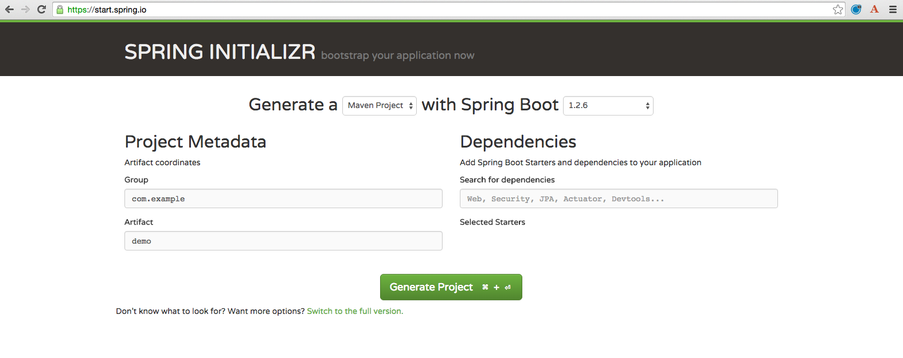
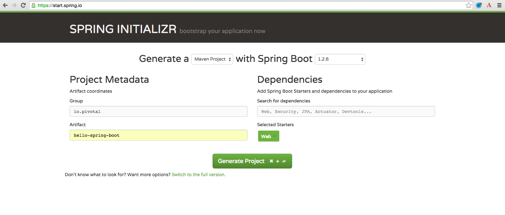
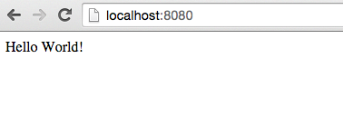

Estimated time: 25 minutes
Setup
What You Will Learn
- How to create a Spring Boot Project
Exercises
Create A Spring Boot Project
1) Browse to https://start.spring.io/

Fill Out the Form Accordingly:
2) Generate a Maven Project with Spring Boot 1.3 (if this version is unavailable then get the latest 1.3.X version, but no SNAPSHOTS).
3) In the Project Metadata section, add the following:
Group
io.pivotal
Artifact
hello-spring-boot
4) In the Dependencies section, add the following:
Web
Completed Form: 
5) Click the Generate Project button. Your browser will download a zip file. Unpack that zip file into the repos directory ($REPOS_HOME). If you don’t know what $REPOS_HOME is then go back and do the setup.
6) Import the project’s pom.xml into your editor/IDE of choice.
STS Import Help:
Select File > Import… Then select Maven > Existing Maven Projects. On the Import Maven Projects page, browse to your $REPOS_HOME/hello-spring-boot (e.g. ~/repos/hello-spring-boot).
Add an Endpoint
1) Add a @RestController annotation to the class io.pivotal.HelloSpringBootApplication ($REPOS_HOME/hello-spring-boot/src/main/java/io/pivotal/HelloSpringBootApplication.java).
package io.pivotal;
import org.springframework.boot.SpringApplication;
import org.springframework.boot.autoconfigure.SpringBootApplication;
import org.springframework.web.bind.annotation.RestController;
@SpringBootApplication
@RestController
public class HelloSpringBootApplication {
public static void main(String[] args) {
SpringApplication.run(HelloSpringBootApplication.class, args);
}
}
STS Shortcut Help:
Need help adding an import?
Use the organize imports command:
- PC: Ctrl + Shift + O
- Mac: Cmd + Shift + O
Not sure how to resolve the problem STS is reporting?
Try the quick-fix (magic shortcut) command:
- PC: Ctrl + 1
- Mac: Cmd + 1
Other helpful shortcuts.
2) Add the following request handler to the class io.pivotal.HelloSpringBootApplication ($REPOS_HOME/hello-spring-boot/src/main/java/io/pivotal/HelloSpringBootApplication.java).
@RequestMapping("/")
public String hello() {
return "Hello World!";
}
Completed:
package io.pivotal;
import org.springframework.boot.SpringApplication;
import org.springframework.boot.autoconfigure.SpringBootApplication;
import org.springframework.web.bind.annotation.RequestMapping;
import org.springframework.web.bind.annotation.RestController;
@SpringBootApplication
@RestController
public class HelloSpringBootApplication {
public static void main(String[] args) {
SpringApplication.run(HelloSpringBootApplication.class, args);
}
@RequestMapping("/")
public String hello() {
return "Hello World!";
}
}
Run the hello-spring-boot Application
1) Open a terminal window and change to hello-spring-boot directory:
$ cd $REPOS_HOME/hello-spring-boot
2) Run the application
mvn clean spring-boot:run
3) You should see the application start up an embedded Apache Tomcat server on port 8080 (review terminal output):
2015-10-02 13:26:59.264 INFO 44749 --- [lication.main()] s.b.c.e.t.TomcatEmbeddedServletContainer : Tomcat started on port(s): 8080 (http)
2015-10-02 13:26:59.267 INFO 44749 --- [lication.main()] io.pivotal.hello.HelloSpringBootApplication : Started HelloSpringBootApplication in 2.541 seconds (JVM running for 9.141)
4) Browse to: http://localhost:8080/

5) Stop the hello-spring-boot application. In the terminal window: Ctrl + C
Congratulations! You’ve just completed your first Spring Boot application.